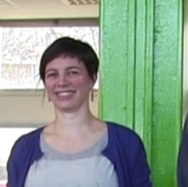
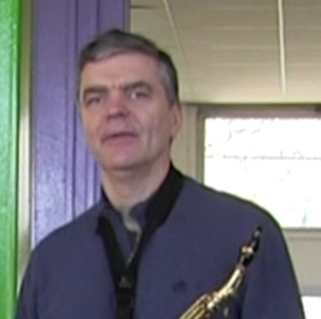
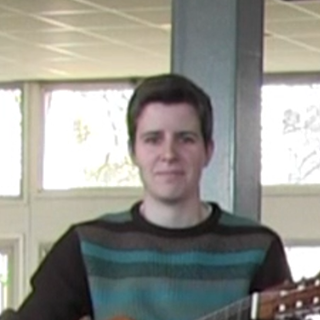
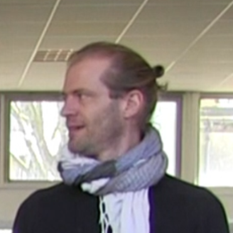
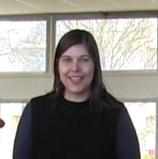

Votre navigateur ne supporte pas l'outil utilisé par cette page.
Utilisez Firefox, Chrome ou Safari pour une expérience optimale.
Ou utilisez la version compatibilité du site (cliquez ici)
Le disque d'or est un projet de spectacle proposé par le Conservatoire de la Ville du Mans, son Ensemble Cénoman et réalisé en partenariat avec l'école primaire Pierre Philippeaux.
En 1977 partait de Floride le vaisseau spatial Voyager qui, tel une bouteille à la mer, emportait à son bord un message pacifique destiné à d'éventuels extraterrestres. Ce message était constitué d'enregistrements sonores provenant de toute la planète.
Aussi incroyable que cela puisse paraître, après un voyage de plusieurs milliards de kilomètres, une réponse nous est parvenue ! Les extraterrestres ont adoré ces musiques, et nous demandent de leur fournir un deuxième « disque » de pièces musicales (le concept de playlist ne leur est pas encore familier).





Les musiciens :
- Cécile Derosier (Direction et coordination)
- Stéphane Charlot (saxophone)
- May Cottel (guitare)
- Matthias Quilbault (tuba)
- Clarissa Severo de Borba (percussion)
- Lionel Le Fournis (percussions et coordination)
- Benoît Couribet (image/informatique musicale)
Le disque
d'or
un projet de spectacle proposé par le Conservatoire de la Ville du Mans, son Ensemble Cénoman et réalisé en partenariat avec l'école primaire Pierre Philippeaux
by positioning, rotating and scaling them on an infinite canvas
En 1977 partait de Floride le vaisseau spatial Voyager qui, tel une bouteille à la mer, emportait à son bord un message pacifique destiné à d'éventuels extraterrestres. Ce message était constitué d'enregistrements sonores provenant de toute la planète.
Aussi incroyable que cela puisse paraître, après un voyage de plusieurs milliards de kilomètres, une réponse nous est parvenue ! Les extraterrestres ont adoré ces musiques, et nous demandent de leur fournir un deuxième « disque » de pièces musicales (le concept de playlist ne leur est pas encore familier).
have you noticed it’s in 3D*?